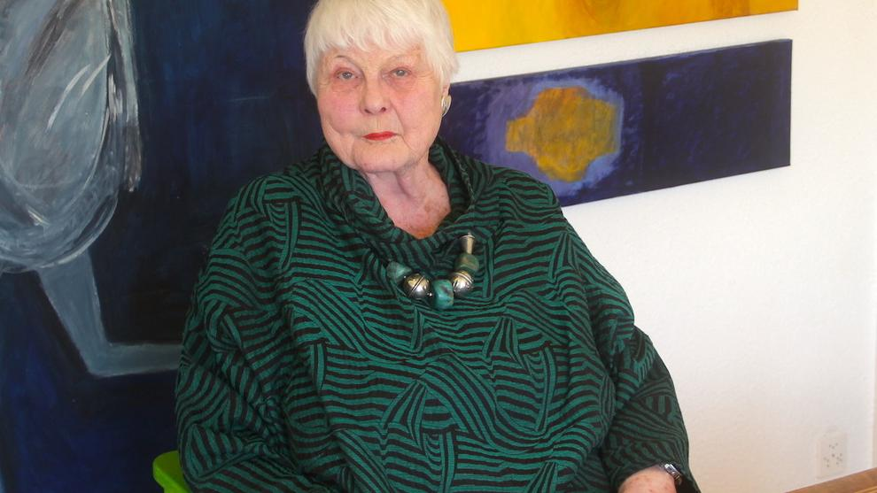

Die Künstlerin
Trix Berger wurde 1932 in Luzern geboren, als Künstlerin tätig ab 1972. Vielflätige Arbeiten in Ton, Papier, Fotografie in Zusammenhang mit Farbe und Bewegung. Tierdarstellungen nehmen in ihrem Werk einen zentralen Platz ein. Monochrom dekorative Elemente werden mit figurativen Darstellungen kombiniert, oft repetitiv als Muster. In der Seidenmalerei entwickelt Trix Berger faszinierende, innovative Techniken für Farbverläufe und im Druck.